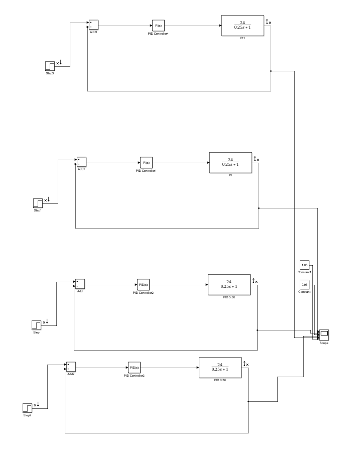
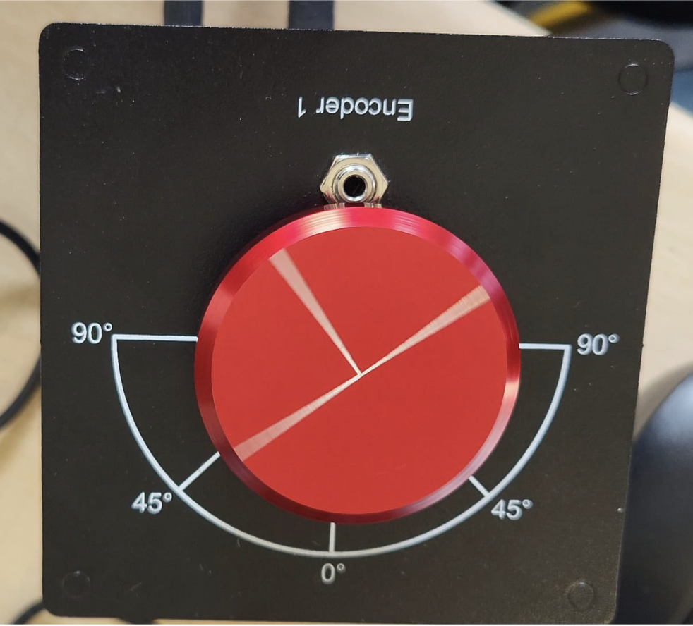

Servo moteur
Objectifs
Assurer la régulation de la vitesse de rotation du disque : dégulation, dépassement et rapidité.
L'utilisation des PID et PI a été cruciale pour pouvoir modifier la vitesse mais aussi pour contrer une éventuelle perturbation externe.
Lien diapo
Problème
Le bode donné par Matlab ne correspondait pas au Bode réalisé par les calculs.
Solution
Refaire le calcul. Réglage et adaptation du pilotage.
Outils utilisés
PID vs PI

Matlab

Qube Servo
Bilan
Le travail d'équipe, la lecture de datasheet et la comréhension du cours m'ont permis de surpasser les difficultés rencontrées.